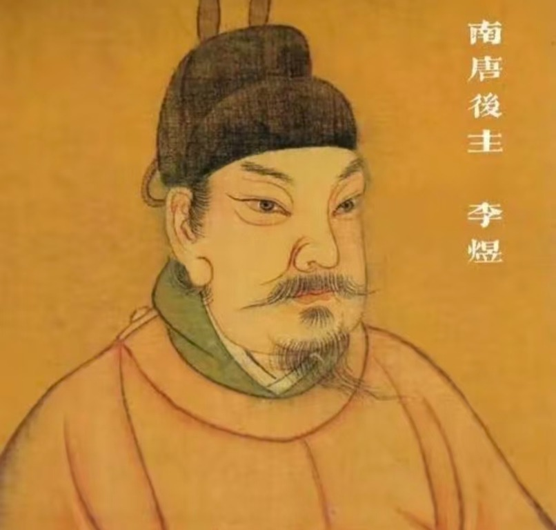
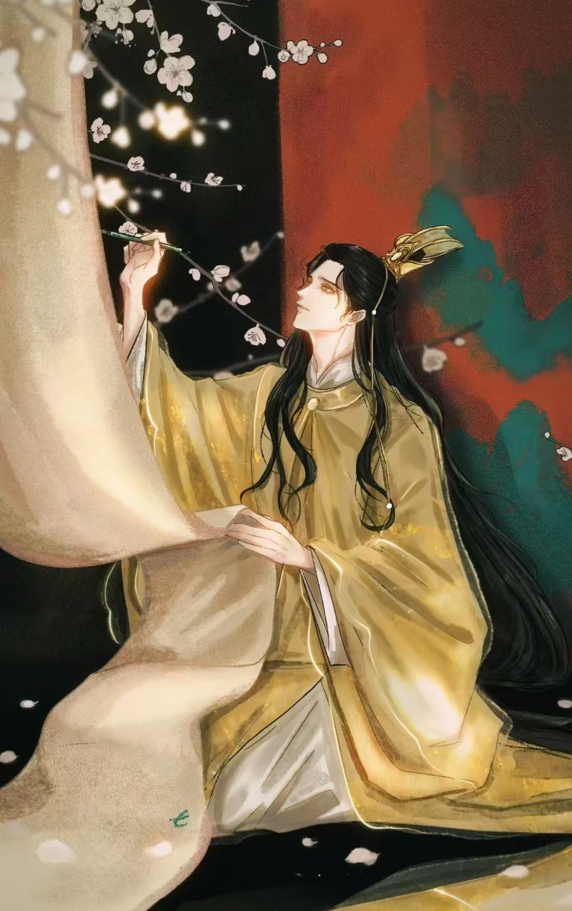
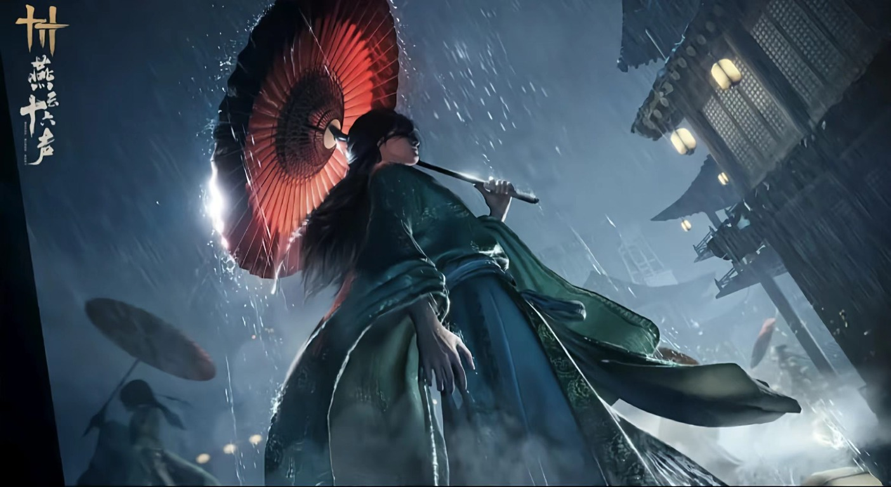

南唐末主
从金陵宫阙到汴京囚居，命运的骤变成为理解其后期词作的一把钥匙。
沿时间读他的故事 ↗点击了解更多AFTERLIFE IN WORDS · 04
李煜已远去，但他并未只留在史书里。千年之后，人们仍从他的词里读见故国、才情与寻常人的悲欢，也在心中描摹属于自己的李煜。
看看今人眼中的他 ↓公元978年，李煜走完了四十二年的人生。留下来的不只是一位南唐君主的身世，还有一颗敏感、真切的词心。后来的读者透过词句望向他，也不断把自己的时代经验映照其中。
从金陵宫阙到汴京囚居，命运的骤变成为理解其后期词作的一把钥匙。
沿时间读他的故事 ↗点击了解更多春花秋月、深院梧桐、流水落花，让难以言说的情绪有了可以触摸的形状。
读他的词与笺注 ↗点击了解更多每一次阅读、诵读与再创作，都会生成新的理解。想象各不相同，却都从那些仍能抵达人的词句出发。
听一阕词如何回响 ↗点击了解更多一幅后世旧绘，三种当代演绎。画像、游戏与影视各自描摹李煜，也映照出不同时代的人们如何想象这位南唐后主。

这是后世流传最广的李煜旧绘。没有青衣风流，没有月下孤影，只有古人肖像画里敦厚平实的君王样貌。
史书不曾记下他的眉眼；这幅画像，亦是后人隔着百年时光，对这位后主最初的想象。
此为宋代以后追绘像，并非李煜生前写真；它代表古人视角，而忘川、燕云、影视，则是今人的重构。
明黄王袍尚留南唐余辉，挥笔题梅，似仍是那个尚有江山可恋的君主。
忘川以温柔的笔触，先还原他帝王的身份，再慢慢透出藏在风雅之下、预知命运的淡淡怅惘。
此为游戏艺术演绎，并非史料所载容貌；它抓住的，是世人想象里「风流多才的南唐后主」。
褪去帝王冕服，一袭青衫、一伞冷雨。燕云十六声没有强调他的君王身份，而放大了命运漂泊感——他不再是南唐天子，更像一个被时代洪流裹挟、满身愁绪的失意之人。
这也呼应了亡国之后「梦里不知身是客」的词境。
这是极具现代感的解构：取其「愁」，而不拘泥于其「位」，是当代年轻人容易共情的李煜形象。胡须、沉郁的眉眼、仰头饮尽的姿态。影视更偏向成年之后、亡国被俘的后主：繁华落尽，锐气消磨，眼底只剩往事与无可奈何，把「天上人间」的落差，凝在一个举杯的瞬间。
影视叙事偏爱他的悲剧性；我们看见的，往往不是前期宴饮游乐的君主，而是那个「以血书词」的亡国词人。春花秋月依旧，读词的人一代又一代。
李煜不再开口，他的词却仍与今天相遇。